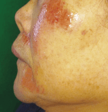

軟組織の外傷
創傷の分類
軟組織の外傷は原因と性状により7種類に分類される。
| 種類 | 原因・特徴 | 組織欠損 |
|---|---|---|
| 咬創 | 咀嚼時・てんかん発作・外傷などで軟組織を噛んで生じた創。難治性潰瘍となることがある | ― |
| 切創 | 鋭利な刃物やガラスなどで生じた創。周囲組織の損傷は少ない | なし |
| 挫傷 | 鈍器により組織が圧挫した開放性損傷。周囲組織の挫滅、創縁不規則 | あり |
| 割創 | 組織が分断された創。周囲組織の損傷あり | なし |
| 裂創 | 牽引力によって組織の弾性力を超えて引き裂かれた創。創縁不規則 | ― |
| 刺創 | 針などの鋭器が刺入して生じた創。創部は小さいが深部に及ぶことがあり、血腫を形成することがある | ― |
| 擦過傷 | 摩擦によって生じた傷。組織液の滲出、上皮層の剥離 | あり |
組織欠損があると二次治癒をたどることが多い。
「創」は外界と交通している開放性損傷、「傷」は外界と交通していない非開放性損傷。
創傷治癒の分類
一次治癒
鋭利に切断された創傷が無菌的に縫合された場合の治癒経過。創面に血腫などの異物がなく、感染がないことが条件。
二次治癒（瘢痕治癒）
創面が接触せずに離開している場合の治癒経過。創面に壊死・血腫・感染・異物が介在する場合に発生し、瘢痕形成を認める。
三次治癒
感染の危険性が高い創面で、初めは二次治癒を行わせ、その後に縫合閉鎖した場合の治癒経過。瘢痕も少なく、一次治癒に近い経過をたどる。
軟組織損傷の治療方針
① 止血 → ② 創の洗浄・異物除去 → ③ デブリードマン → ④ 創の閉鎖・縫合 → ⑤ 感染対策
① 止血
圧迫止血が基本。必要に応じて電気凝固法や縫合結紮法を用いる。
② 創の洗浄・異物除去
- まず術野の消毒を行う
- 次いで大量の滅菌生理食塩液にて創内を十分に洗浄する
- ガーゼ、滅菌ブラシ、鋭匙、ピンセットなどで異物除去
- 創内は消毒液を用いない
③ デブリードマン（新鮮化）
壊死組織や挫滅組織、洗浄では除去できないほど創部の汚染が著しい症例では、切除して新鮮創化を図る。
④ 創の閉鎖・縫合
- 感染の可能性が低く組織欠損を伴わない場合 → 可能な限り縫合閉鎖 → 一次治癒を図る
- 大きな組織欠損を伴う場合 → 埋没縫合（筋層縫合、皮下縫合）の後に皮膚縫合
- 縫縮できないような大きな実質欠損 → 湿潤療法（Wet-to-dry dressing法）→ 二次治癒を図る
ドレッシング材の種類
| 種類 | 特徴 |
|---|---|
| ポリウレタンフィルム | 透明で創面の観察が可能。浅い擦過傷向き |
| ポリウレタンフォーム | 吸収性がある。中等度の滲出液がある創向き |
| ハイドロコロイド | 滲出液を吸収してゲル化し、湿潤環境を維持。擦過傷に適する |
| アルギン酸 | 滲出液が多い創向き。止血効果もある |
⑤ 感染対策
- 抗菌薬・抗炎症薬の投与
- 破傷風の予防：土壌からの汚染がみられる際には、抗破傷風ヒト免疫グロブリンおよび破傷風トキソイドの投与を検討
上皮組織欠損への対処法
①周囲組織の縫縮、②皮膚（粘膜）自家移植、③局所皮膚弁（有茎・遊離）、④人工材料による被覆、⑤開放創による二次治癒 のいずれかを選択する。できるだけ単純に縫縮し、一次治癒にしたほうが審美的によい。
創傷治癒を妨げる要因
全身的要因
- 加齢、肥満
- 低栄養（PEM）、低タンパク血症、ビタミン欠乏（A、C、E、K）
- 慢性疾患：糖尿病、貧血、末梢の循環不全
- 副腎皮質ステロイド・免疫抑制薬・抗腫瘍薬の投与
局所的要因
- 異物、壊死組織
- 感染
- 創面への圧迫・刺激（安静の有無）
- 血行不良
- 死腔（離断した組織間の間隙）→ 二次治癒となる
創傷治癒の経過
| 相 | 時期 | 特徴 |
|---|---|---|
| 第1相（炎症・破壊相） | 受傷直後〜数日間 | 炎症性機転、白血球による壊死組織の清浄化、組織の再生・増殖の開始 |
| 第2相（増殖相） | 受傷後約2週間 | コラーゲンの増殖・同化期間、肉芽組織の形成 |
| 第3相（成熟相） | 数か月〜数年 | 線維化から瘢痕組織形成、瘢痕の再形成・再編成 |
過去問で実力チェック
生後11か月の乳児。口蓋部からの出血を主訴として来院した。30分前に箸をくわえたまま転倒したという。箸の破損はなく、創部からの出血も止まっていた。全身状態に異常所見はみられない。全身麻酔下で処置を行うこととした。術中の口腔内写真（別冊No.7）を別に示す。矢印は創部を示す。 まず行うのはどれか。1つ選べ。

b 掻 爬
c 粘膜下剥離
d デブリドマン
e 創の深さの確認
【解説】箸による口蓋部の刺創の症例。刺創は創部が小さいが深部に及ぶことがあり、血腫形成のリスクもある。口蓋部は内頸動脈や頭蓋底に近く、深部の重要組織損傷の有無を確認する必要がある。縫合やデブリードマンの前に、まず創の深さを確認することが最優先となる。
13歳の男子。顔面の外傷で来院した。クラブ活動中に運動場で転倒したという。術中の口腔外写真（別冊No.1）を別に示す。 一次止血とともに行う処置はどれか。1つ選べ。

b デブリードマン
c 局所止血材の塡塞
d 組織接着材の塗布
e 皮膚接合用テープによる固定
【解説】運動場での転倒による顔面の擦過傷の症例。擦過傷は砂や土などの異物が混入しやすく、治療フローに従って一次止血とともにデブリードマン（異物除去・壊死組織の切除）を行う。異物が残存すると感染リスクが高まり、また外傷性刺青（色素沈着）の原因となる。縫合は創の状態を確認した後に行う。
78歳の女性。顔面の疼痛を主訴として来院した。2時間前に自宅で転倒して顔面をぶつけたという。初診時の顔貌写真（別冊No.38）を別に示す。 皮膚に対する適切な処置はどれか。1つ選べ。

b 次亜塩素酸による消毒
c ミコナゾール硫酸塩の塗布
d 乾ガーゼによるドレッシング
e ハイドロコロイド材による被覆
【解説】転倒による顔面の擦過傷の症例。擦過傷は組織欠損を伴うため縫合閉鎖は困難であり、湿潤療法が適応となる。ハイドロコロイド材は滲出液を吸収してゲル化し、創面の湿潤環境を維持して二次治癒を促進する。乾ガーゼによるドレッシングは創面を乾燥させ、治癒を遅延させるため不適切。次亜塩素酸は消毒薬だが創内への使用は組織障害を起こすため推奨されない。